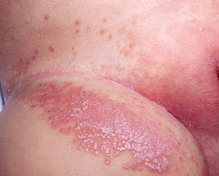
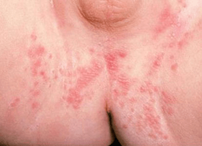

Candida albicans is a type of fungus normally found in the digestive (gastrointestinal) tract. If your baby is wearing a moist or blocked up (occluded) diaper, particularly one that is dirty (has fecal contamination), an inflammatory skin rash (dermatitis) may develop on the baby's skin. Diarrhea increases the risk for developing candidal diaper dermatitis, and candida infection in the mouth (oral thrush) may also occur.

